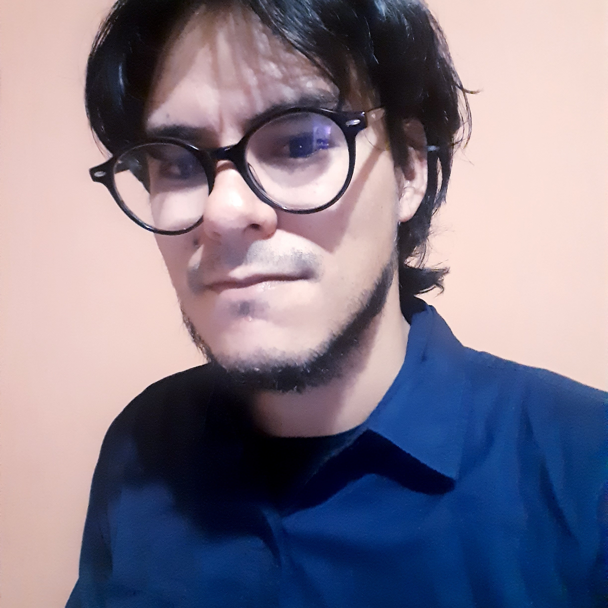

Enseñanza de Filosofía.
Perfil:
Cuento con experiencia en
investigación cualitativa y
cuantitativa en el campo educativo,
letras y humanidades. Mi objetivo
es desarrollar cursos de ética
profesional, y de organizaciones,
que comprendan el factor ético
como central en el planteamiento
de objetivos empresariales y como
elemento diferenciador en el
mercado.